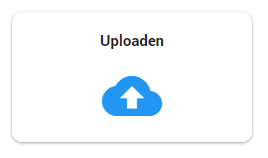

Om data te uploaden in een zaak in ZyLAB ONE navigeert u naar de upload pagina in het Woo Dashboard. Klik hiervoor op de tegel genaamd Uploaden.

U bevindt zich nu in het Upload Dashboard. Hier kunt u alle voorgaande uploads zien en de progressie van de lopende uploads.